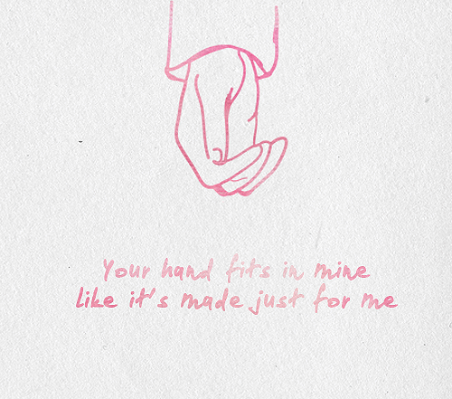

In this segment, hot issues related to YOUTHS also RELATIONSHIPS will be addressed; including but not limited to series and episodes of HOT tips regarding relationships will be presented. Videos & short messages will inclusively be released time to time. Later, TRUTH and answers to some critical and non-critical questions regarding but not limited to YOUTH, life and RELATIONSHIPS will be answered and presented professionally. Aim is to educate, help people who have struggle in this area and, also to intensify those who want to deeply understand relationships so that they can practically and successfully navigate in relationships. Solutions to: WHAT? WHO? WHEN? HOW? Will be presented + PRACTICAL APPROACHES in lieu to relationships will be provided. #THE TRUTH and life will be presented# $$YOUTH ISSUES will be discussed$$ **RELATIONSHIP ISSUES will be addressed**
